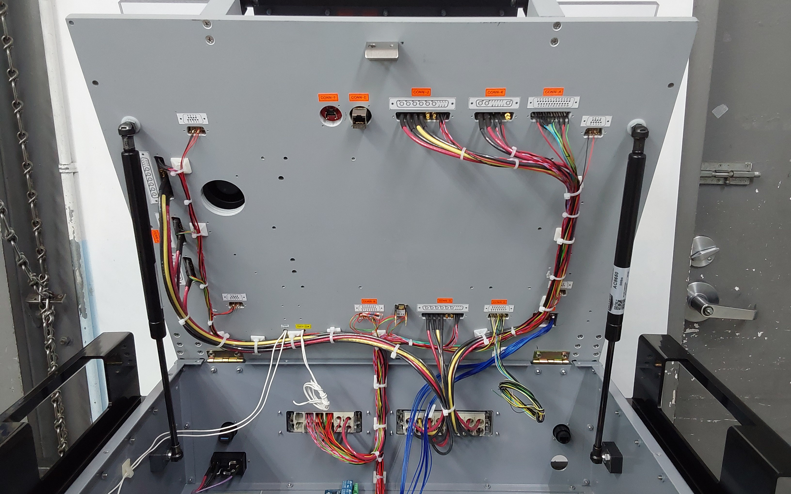
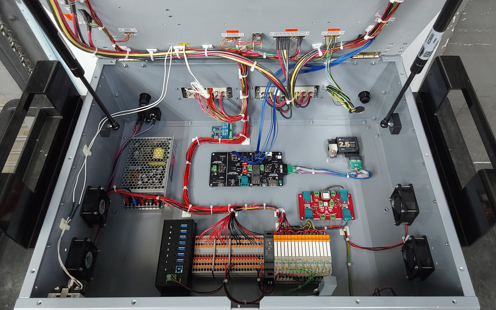

Hardware Systems Integration & Production Bring-Up
My day-to-day at QxQ involves turning schematics into fully wired, production-ready test fixtures. The job is part electrical work, part risk management, and making sure nothing destructive happens when you flip the power switch.
At QxQ, I own the full electrical integration of multi-subsystem hardware platforms used in automotive, server, and embedded environments. Each build involves converting customer schematics and wiring diagrams into a complete, verified system. These systems cover everything from power distribution and relay switching, to control interfaces and DUT connectivity. Builds range in complexity from 50 to 800 individual terminations across mixed power domains, using wires ranging from 10 AWG for high-current conductors, to 30 AWG signal wiring.
The core challenge is primarily risk control. These fixtures operate at voltage and current levels that can permanently damage components on the first power cycle if something is misrouted. I developed a verification workflow that systematically intercepts electrical and mechanical faults before power-on. Over time, I became the default assignee for the largest and highest-density builds, proving my reliability when it comes to execution and integration.
Block diagrams and wiring schematics are the primary inputs for every build. Before any physical work begins, I use these to map power domains, identify risks across connections, and plan harness routing for enclosure constraints. This preliminary analysis prevents reworks downstream and helps with smoother integration throughout the entire build.


Each fixture integrates multiple subsystems that need to work together cleanly. Keeping the power, control, and mechanical layers organized is what separates a reliable build from one that causes problems later.
- Shared 5V / 12V / 24V rails
- Multi-amp loads, 10 AWG conductors
- Relay-based switching architectures
- AC adapter to PSU to distributed DC rails
- Raspberry Pi controllers
- USB hubs and programmers
- Network switches
- CAN-connected DUT interfaces
- VPC and CPC high-density connectors
- Ferrules, insulated crimps
- Managed harness routing and slack
- Customer-specific labeling
Keeping low-voltage logic isolated from higher-current rails is something I treat as non-negotiable. Routing a Raspberry Pi supply lead into a 24V rail isn't something you get a second chance on. That's exactly the kind of fault my pre-power checks are designed to catch.
I don't consider a build finished just because the wiring is done. Before any fixture gets powered on, I work through a set of checks I've developed over time. Some of this came from the job, some of it came from making mistakes early on and not wanting to repeat them.
Confirm correct terminal seating and strain relief on all connections. VPC and CPC connectors get extra attention for rotational and vertical symmetry risks before being locked in.
Walk every signal and power path to confirm correct routing, adequate slack for hinged enclosures, and no situations where motion could cause a short after delivery.
Spreadsheet-tracked continuity check across every connection. High-risk builds get a second pass. Any failed connections get corrected before I move forward.
Confirm isolation between power rails before power-on. I'm specifically looking for anything that could create a cross-domain path into logic components.
First power-on goes through a bench PSU with current limiting, not straight to wall power. If anything about the relay, power, or ground wiring looks off, I don't energize until it's resolved.
When something doesn't work during bring-up, I try to isolate it myself before pulling in an engineer. Most of the time I can track it down. The fan issue below is a good example of how that process actually plays out.

After all verification gates are passed, the fixture gets documented and handed off. One thing I'm proud of is that engineers at QxQ stopped requiring a secondary check on my builds over time. That kind of trust doesn't come from one build, it comes from being consistent.

- Trained two other integrators to around 80-90% of my production speed through hands-on instruction
- Reduced miswiring frequency across the team by introducing structured verification passes
- Started flagging mechanical clearance risks during integration, which prevented a few rework situations before they happened
- Got comfortable working with incomplete documentation and learned when to build on my best interpretation versus when to stop and clarify with an engineer
- Became the default owner for the highest-density fixture builds as a result of consistent delivery quality